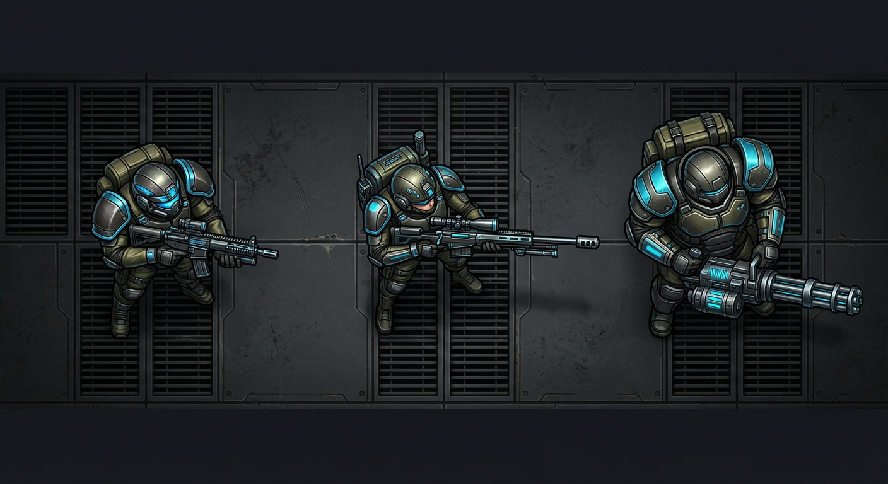
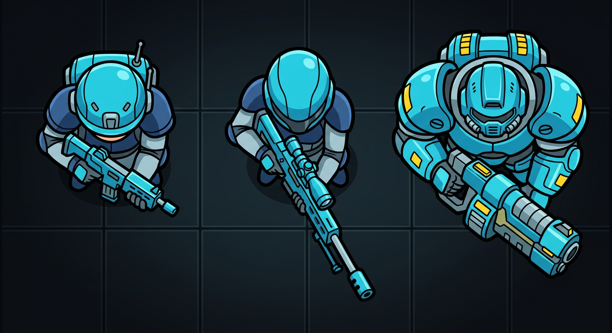
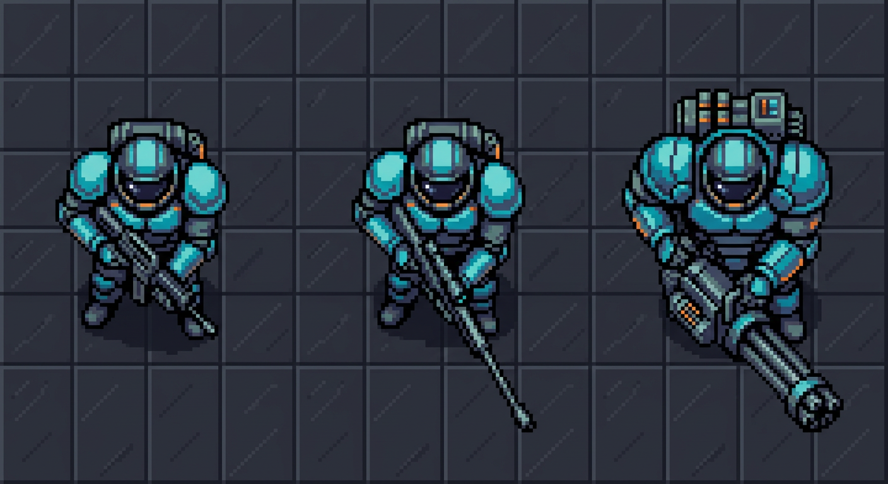
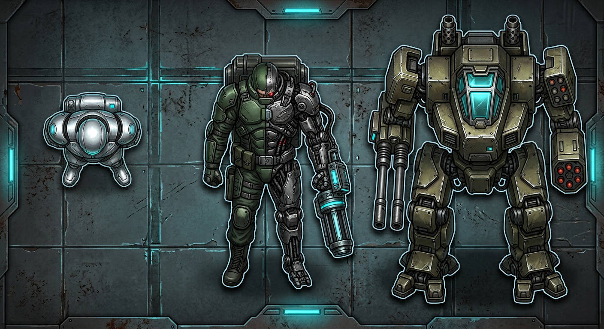
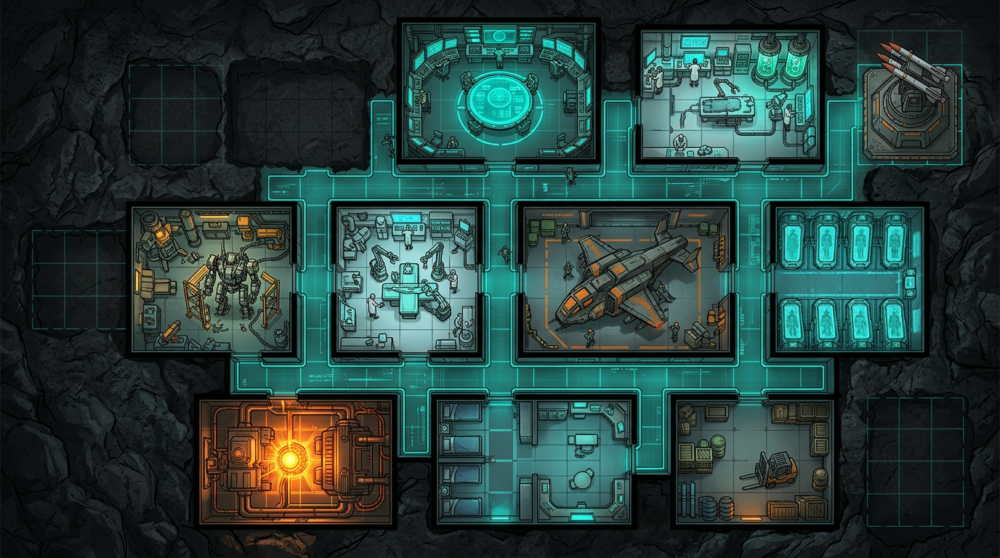
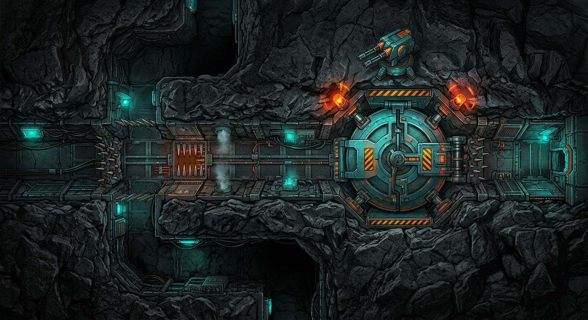
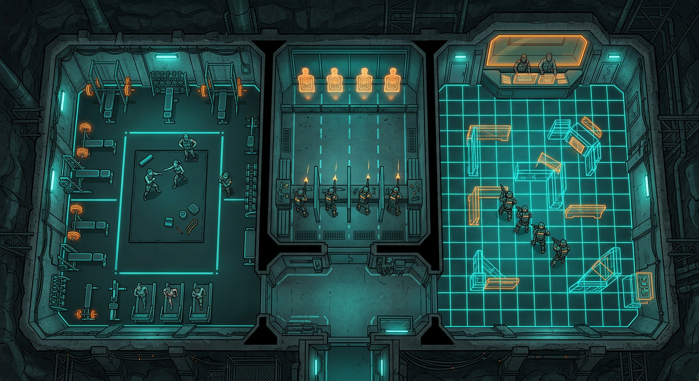

Design-Prototypen fuer die naechste Grafik-Ausbaustufe.

A · Militaerisch-realistisch Detailreiche Panzerung, gedeckte Farben, Leucht-Visiere. Ernster X-COM-Ton.
B · Comic / Cel-Shaded Dicke Outlines, flaechige Farben, extrem lesbar auch bei kleiner Groesse.
C · Pixel-Art Retro 90er X-COM-Nostalgie, knackige Pixel, gealterter Charme.
Spezialeinheiten-Konzept Android (links) · Cyborg – Wiedergeburt erfahrener Veteranen (Mitte) · Kampflaeufer (rechts).
Basis-Konzept (modular) Kommando, Hangar, Reaktor, Cryo-Schlaf, Cyborg-Labor, Mech-Werkstatt – plus leere Aushub-Slots fuer Erweiterungen. Interaktiven Prototyp oeffnen →
Basisverteidigung (Dungeon-Keeper-Stil) Panzertueren, Deckengeschuetze, Bodenfallen, Gasduesen – enge Korridore werden zu Todeszonen. Im Prototyp: Angriff simulieren! →
Trainingsraeume 🏋️ Kraftraum (HP) · 🎯 Schiessstand mit Holo-Zielen (Genauigkeit) · 🤼 Kampfsimulator-Halle, in der Squads Formationen ueben (Reaktion). Im Basis-Bau trainieren →Vier prozedurale Designs, drei Klassen (Sturm / Sniper / Heavy), beide Teamfarben – alle drehen sich, genau wie im Spiel. Kein Bild-Download noetig, jede Farbe/Groesse sofort anpassbar.